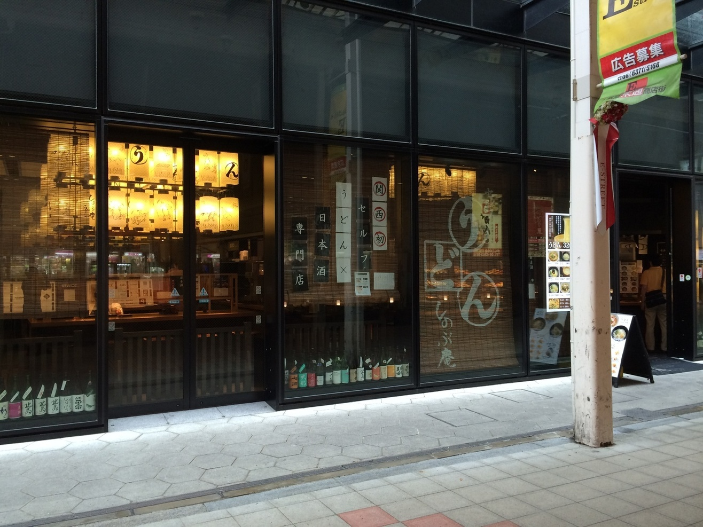

[大阪 梅田]
うどん しのぶ庵

おすすめのポイント
東梅田駅から、歩いて２分ほどのところ、東通り商店街西側の入り口にある、うどん屋さんです。
また、うどん意外にも、日本酒などお酒や、おつまみ料理も提供しております。
このお店は、カウンター席とテーブル席となっています。
カウンター席は向い合わせの席ですが、完全に目隠しがされているので、気を使うことなく食事を楽しめます。

私は、夜に友人とお酒を飲みましたが、雰囲気も落ち着いており、是非一人でも足を運んでみたいと思うようなお店でした。
お店の情報
| 店名 | うどん しのぶ庵 梅田店 |
|---|---|
| 住所 | 大阪府大阪市北区小松原町2-4 大阪富国生命ビル 1F |
| アクセス | 大阪メトロ東梅田駅徒歩2分
東梅田駅から160m |
| 電話 | 06-6313-5129 |
| 営業時間 | [全日]
11:00～23:00 |
| 定休日 | 不定休
|
| 予算 |
ランチ 〜999円
ディナー 〜999円 |
| HP |
http://mm-foods.net/udon_shinobuan/ %E6%A2%85%E7%94%B0%E5%BA%97/ |